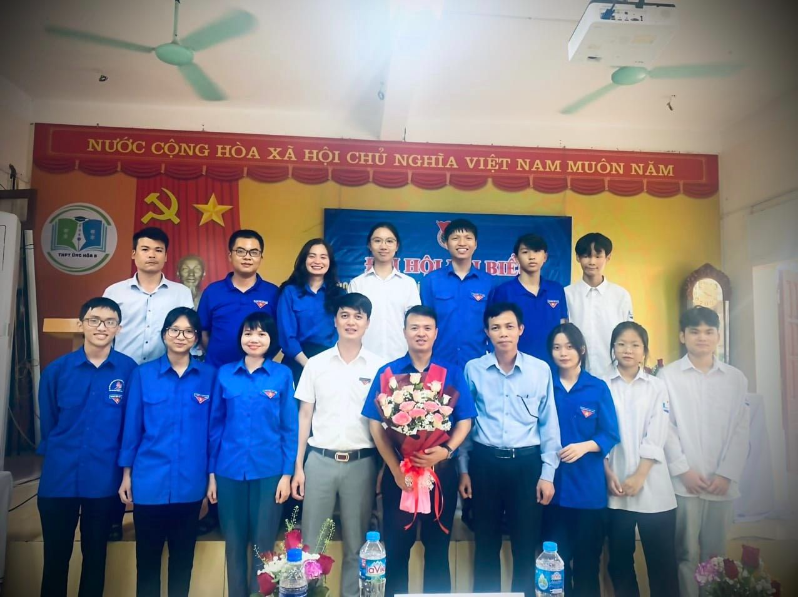
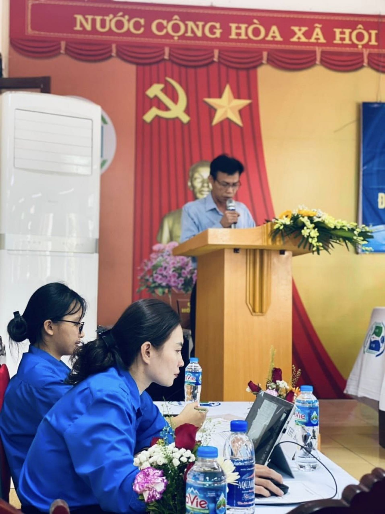

Đại Hội đại biểu đoàn trường nhiệm kỳ 2023 - 2024
Thực hiện sự chỉ đạo của Ban thường vụ Huyện đoàn Ứng Hòa và Ban chi ủy, chi bộ Đảng Trường THPT Ứng Hòa B, Ban Chấp hành Đoàn Trường THPT Ứng Hòa B đã trang trọng tổ chức Đại Hội đại biểu đoàn trường nhiệm kỳ 2023 - 2024 vào hồi 14h - 14h30, ngày 08/11/2023, tại phòng Hội đồng nhà trường.
Đại hội nhằm tổng kết công tác đoàn và phong trào thanh niên nhiệm kỳ 2022 - 2023, đề ra phương hướng, nhiệm vụ, mục tiêu nhiệm kỳ 2023 - 2024, đồng thời bầu ra Ban Chấp hành nhiệm kỳ mới.
Đại hội vinh dự có sự tham dự chỉ đạo của đồng chí Phạm Quốc Khánh - Huyện ủy viên - Bí thư huyện đoàn Ứng Hòa và vinh dự được lắng nghe sự chỉ đạo, giao nhiệm vụ đầy tâm huyết của thầy giáo Ngô Đại Thắng - Bí thư chi bộ - Phó Hiệu trưởng phụ trách nhà trường.
Đại hội đã kết thúc thành công tốt đẹp, bầu ra Ban Chấp hành nhiệm kỳ mới với 15 thành viên, trong đó đồng chí Lại Vũ Anh làm Bí thư, các đồng chí Nguyễn Đình Ngọc Vượng (lớp trưởng 12A1) và Trần Khánh Thành (Bí thư 11A1) làm Phó Bí thư.
Chúc Ban Chấp hành Đoàn trường nhiệm kỳ mới hoàn thành xuất sắc mọi chỉ tiêu trong nghị quyết của Đại hội!
Một số hình ảnh đại hội:

BCH Đoàn trường nhiệm kì 2023 - 2024 và khách mời
Đồng chí Ngô Đại Thắng phát biểu trước đại hội